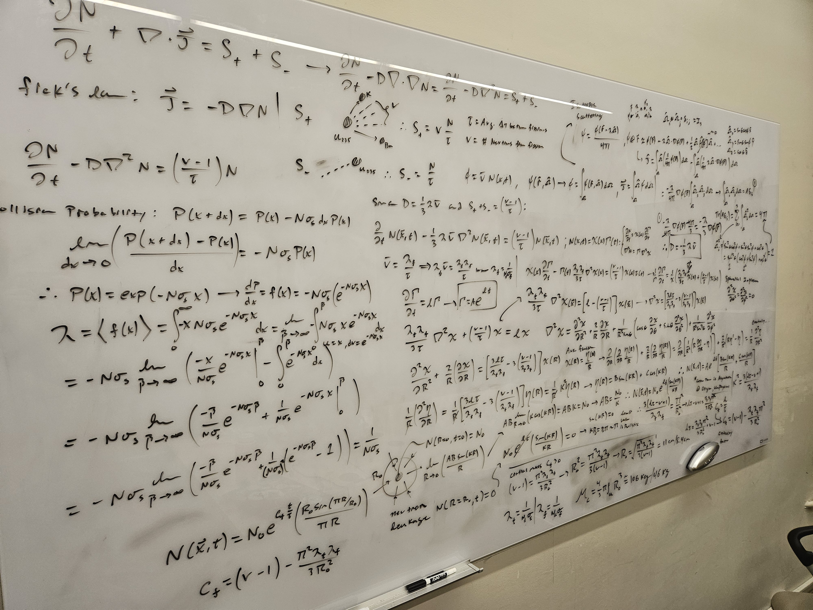
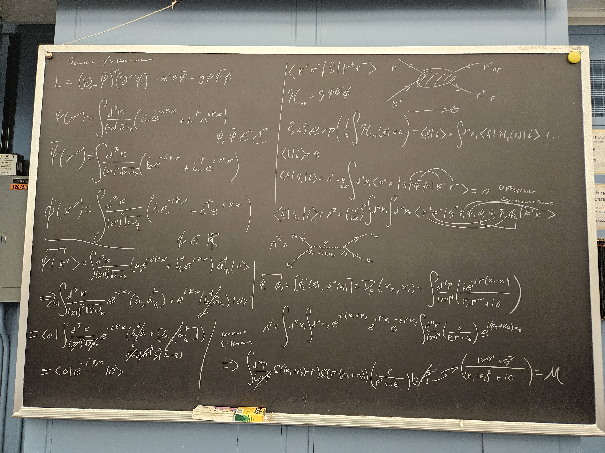
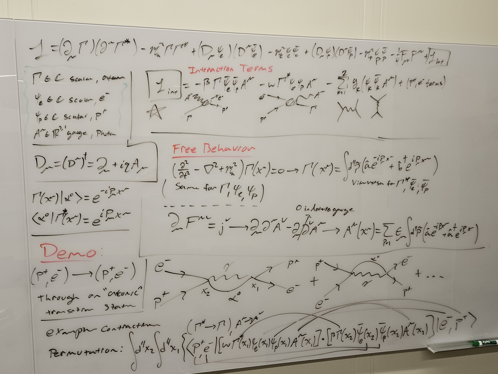
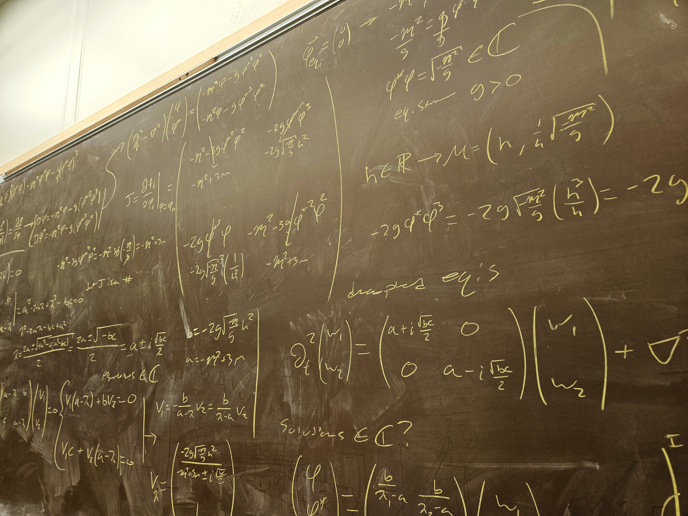

Self-Taught Math & Physics
With guidance from RPI professors, I've been working through Quantum Field Theory, General Relativity, and Statistical Mechanics on my own. The mathematics behind QFT changed how I look at engineering problems that seem unrelated on the surface: understanding Gibbs free energy gave me a much deeper handle on phase transitions when designing vapor pressurized tanks, and studying the Lie groups behind spinor transformations is what led directly to the symplectic reconstruction project above.
- Peskin & Schroeder — Introduction to Quantum Field Theory
- Tong — Quantum Mechanics
- Tong — Quantum Field Theory
- Tong — Gauge Theory
- Misner, Thorne & Wheeler — Gravitation
- Panton — Incompressible Flow
- Griffiths — Introduction to Electrodynamics
- Feynman — The Feynman Lectures on Physics
// selected derivations
Some math experimentation, to try and learn more about how the world works.
Spherical Implosion Criticality — U-235
Deriving the Neutron Diffusion Equation, then solving a spherical implosion problem using superposition of neutron modes. Calculated critical mass of U-235. Surprisingly not that hard of a calculation, and sort of terrifying that it only takes one whiteboard!

Scalar Yukawa Theory
Derived the Feynman rules for a scalar field coupled to a fermion via Yukawa interaction, and computed tree-level scattering amplitudes directly from the Lagrangian. The first time I worked from a field theory to a measurable prediction.

Bound States from Quantum Fields — Bethe-Salpeter
Derived the Bethe-Salpeter equation from the full two-particle propagator, a relativistic bound-state formalism. This derivation is extremely cool, since it combines applied math techniques like linearization of Green's functions with pure math like the geometric series reduction.

Relativistic Field Model of Simple Plasmas
An attempt to model plasma dynamics by forming internal propagators from scalar proton and electron fields. Didnt really work out, but I learned about how to build a quantum field theory from assumptions about particle behavior.

Field Interaction Decoupling
Experimented with decoupling fields under certain conditions. Overall a dead end, but I learned how to work with eigendecomposition of linear differential operators in a more general sense.
